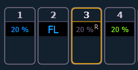

Release is an extension of the {Make Null} command in Blind. When Release is used, it behaves like Make Null, but it also releases the channel and parameter data to its background state, if one is available, or fades out the intensity instead.
Release can be used to mask instructions in a cue after it has already been stored. The data is not removed from the cue.
Release is applied in Blind by using the {Release} softkey or by using the [Release] hardkey.
Note: Release tracks forward through a cue list until the Release command is removed or a move instruction happens.
When release has been applied, the released content will display in gray with a R in Blind.

A Release flag will also appear in the Playback Status Display and the Cue List Index.